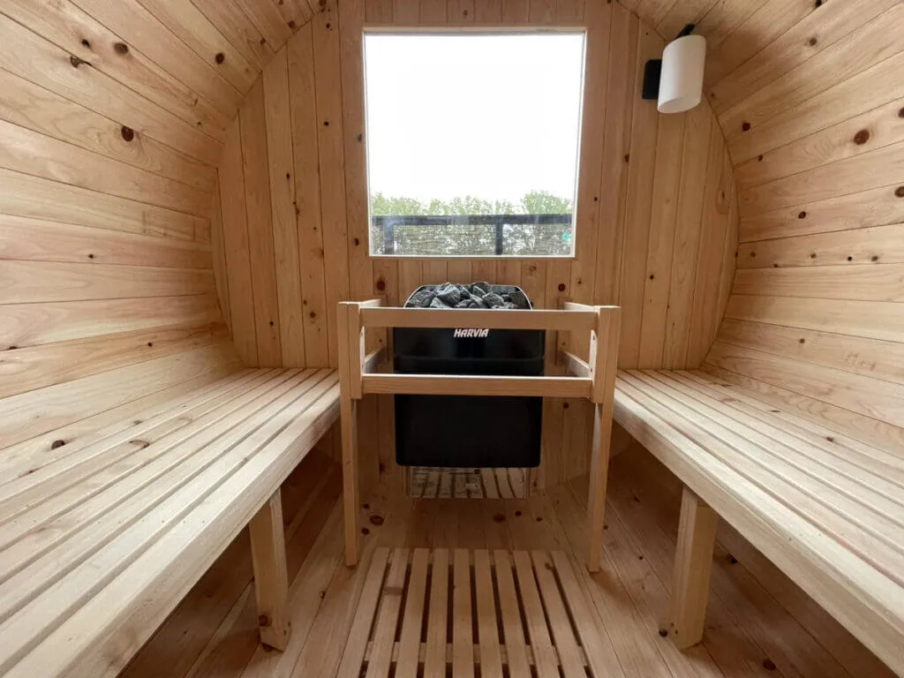

自宅にバレルサウナを設置する際は、素材選びやサイズ、値段、収容人数、ヒーターの種類、使い方によるカスタマイズやオプションなどを考慮し、屋内外設置のメリット・デメリットを理解することが大切です。メーカー担当者に確認し、導入計画を立て、コストパフォーマンスの高いバレルサウナを選びましょう。
自宅でバレルサウナを楽しもう！値段など選ぶ際のポイントは？

バレルサウナとは、木製の円筒形をしたサウナのことを指し、その独特な形状が特徴です。自宅に設置することで、外出せず、いつでもプライベートなリラクゼーション空間を持つことになります。家族や友人と一緒に楽しむのも良し、自分だけの「秘密空間」としても利用できます。
こちらでは、自宅向けにバレルサウナを選ぶ際のポイントをご紹介します。
木材の種類
バレルサウナ選びでは、素材が大きな決め手になります。国産の「ヒノキ」や「スギ」、北欧産の「スプルース」「レッドシダー」「パイン（松）」などが主流です。ヒノキは香りが良く、高温多湿な日本の気候にも適しているため、特に国内で人気があります。また、ヒノキやレッドシダーは耐久性や耐熱性に優れ、長期間屋外での使用に耐えることができます。これらの木材をしっかり乾燥することでより、熱による木材の変形を防ぐことが可能です。設置場所やサウナの使用頻度に合わせて、最適な素材を選びましょう。
サイズと収容人数
バレルサウナのサイズ選びは、設置スペースと利用する人数を考えることが重要です。一般的なバレルサウナのサイズは直径1.8m～2.3m、奥行きは1.2m～4.0mの範囲内です。
収容人数については、奥行き1.2mで2名、1.8mなら4名、そして3.8mでは最大で8名までの収容が可能なバレルサウナもあります。
| 奥行き | 収容人数 |
|---|---|
| 1.2m | 2名 |
| 1.8m | 4名 |
| 2.5m | 6名 |
| 3.8m | 6～8名 |
これらの情報をもとに、自宅のスペースや使う人数に合ったバレルサウナを選ぶことができます。
サウナ室に加えて、前室（更衣室）の有るタイプもあります。
値段が安いコンパクトなものから大人数で使えるものまで様々なサイズがあり、サイズが大きいほど値段も上がる傾向にあります。予算とのバランスを考慮しながら最適なモデルを選択しましょう。
値段
バレルサウナ本体の値段はメーカーや産地によって幅広く、価格帯は、160万円～350万円の間です。値段を左右する要素として、サイズや選択する木材の種類があります。また、バレルサウナの値段には本体以外の費用も考慮する必要があります。具体的には、オプション窓ガラス、ストーブ及び電気工事費、塗装や屋根などのオプション代、組立費、配送費といった初期費用が加算されます。これらの費用は地域やサウナの種類によっても異なるため、購入前には見積りを取得しましょう。
設置場所
バレルサウナを自宅で楽しむ際、設置場所の選択は大きな問題です。屋上設置と屋外設置、それぞれに留意点があります。
屋上設置
屋上での設置について、バレルサウナの重さを支えられるかどうかを確認することが重要です。屋上の耐荷重性を確認し、導入可能なサイズを選びましょう。屋上は、建築申請や消防法が厳しい点も注意です。
屋外設置
天候の影響を受けやすく、設置場所によって、強風、除湿など安全性や耐久性の追加工事が多少必要な場合もございます。また、床が平面になるようなコンクリートなどの整地作業は、バレルサウナを設置する前に完了する必要があります。
自宅でバレルサウナを安全かつ長期間快適に楽しむために、しっかりと設置場所の事前確認をすることが重要です。
予算に合わせてバレルサウナを選ぶポイント
バレルサウナを自宅に設置する際は、適切な予算計画を立てることが重要です。まず、総予算を決めることから始めましょう。予算はバレルサウナの購入費用だけでなく、設置や維持費用も考慮に入れてください。
予算計画のステップ
総予算の設定
自分の経済状況を踏まえ、どれくらいの費用をバレルサウナに充てられるか決定します。
また、バレルサウナにおいて費用以外の判断軸を事前に決めるのも重要です。
安価な値段には、背後にどんな理由やどんなリスクが存在するのか、確認頂くことをおすすめします。
費用の内訳作成
バレルサウナ購入費用、設置費、維持費をリストアップし、それぞれの費用について各メーカー、工務店、電気屋などに見積もりをもらいます。
余裕を持った計画
導入時には予期せぬ支出に対応できるよう、余裕を持った予算設定を心がけましょう。
例：運送費、気候対策により追加の基礎工事など
このように具体的な導入計画や予算を立てることで、無理なくバレルサウナを楽しむことができます。
コストパフォーマンスの高いバレルサウナの見分け方
コストパフォーマンスの高いバレルサウナを見分けるポイントはいくつかあります。まず、素材の質です。含水率が低くて高温多湿な環境でも耐久性があり、長持ちする木材を使用したサウナは、長期的に見てコストパフォーマンスが高いといえます。
例えば、Rink SAUNAでは、このような国産ヒノキ材で製造しています。
① 含水率1桁台（4〜7%）のサーモウッド水準
② 特殊合板加工により、高温多湿な環境下で、割れ反り・収縮膨張を抑える
③ サウナ室内に、贅沢な無節・国産ヒノキ材を使用
④ JIS・JASが認定した製品の安全等級で、最も安全性が高いF☆☆☆☆（エフフォースター）基準の建材を使用
次に、エネルギー効率の良いヒーターを搭載しているかどうかも重要です。自宅環境にフィットする効率的なヒーターは消費電力を抑え、ランニングコストを低く抑えることができます。
また、メンテナンスのしやすさもポイントです。木材の性質上、熱で収縮・膨張しやすいため、バレルサウナのバンド締め直し（年2回）や再塗装（4～5年に一回）、サウナ室清掃・乾燥など定期的なメンテナンスをすることで長期間にわたって快適に使用でき、結果的にコストパフォーマンスが向上します。
これらのポイントを踏まえ、商品情報やユーザーレビューなどを参考にしながら、自分のニーズに合ったバレルサウナを選びましょう。
Rink SAUNAのバレルサウナは、自宅で本格的なフィンランド式サウナをお楽しみいただけます。国産ヒノキを使用し国内製造、6次産業化により高品質と低価格を実現。ハイコストパフォーマンスが特徴です。
五感を重視した設計で、防虫・防腐施工や特殊合板加工による高い耐久性と安全性をご提供。カスタマイズや内装の変更も対応していますので、お気軽にご相談ください。